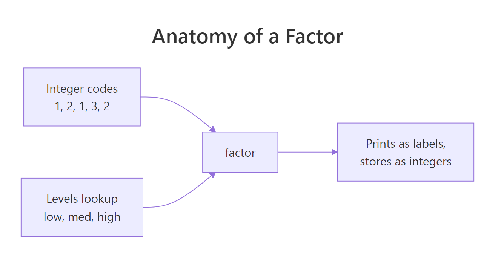
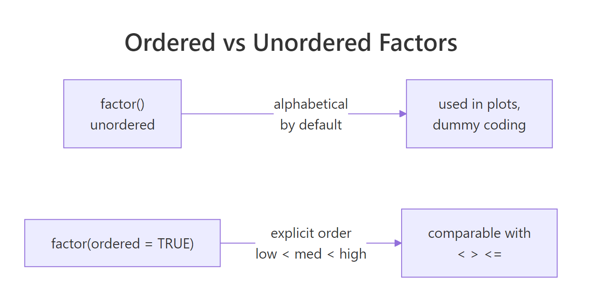

R Factors: The Data Type That Trips Up Almost Every R Beginner
A factor in R is a character vector with two twists: it memorises the set of allowed values (its levels), and it stores each element as a small integer pointing into that lookup. That's why factors plot, dispatch, and sort in ways raw strings don't, and why converting them back to numbers needs two careful steps.
This guide shows what a factor actually is, how to reorder and relabel levels, when to reach for ordered factors, how forcats makes factor surgery painless, and the three classic bugs that ruin beginner analyses.
Why do R factors exist at all?
Before forcats and modern tidyverse, R had factor(), and the reason it exists is statistical modelling. When you fit lm(y ~ group) and group is a character vector, R has to pick which category is the baseline, how to dummy-code the rest, and what to do at prediction time if a new category appears. Factors bake those decisions into the data: a fixed set of allowed levels, a known order, and a compact integer storage.
Let's build one by hand and peek at what's inside. The underlying representation is the whole point.
f prints as words, but typeof(f) says "integer", the factor is storing c(3, 1, 2, 3, 1) and pointing into the alphabetised levels vector c("large", "medium", "small"). That's why as.integer(f) hands you level codes, not the original strings, a beginner trap we'll fix in the gotchas section.

Figure 1: A factor is an integer vector plus a levels lookup. The integer codes point into levels; printing and plotting use the string labels.
Try it: Build a factor ex_grade from c("B", "A", "C", "B", "A") and print (a) the underlying integer codes and (b) the levels.
Click to reveal solution
Explanation: Levels are alphabetical by default. "A" is level 1, "B" is level 2, "C" is level 3, so the sequence B, A, C, B, A becomes the integer codes 2, 1, 3, 2, 1.
How do you control the order of factor levels?
The default order is alphabetical, which is almost never what you want. "Low / Medium / High" should be in that order on a plot axis. "Monday / Tuesday / ... / Sunday" should be chronological. Controlling level order is where factors earn their keep, and there are four ways to do it, two in base R, two in forcats.

Figure 2: Unordered factors have a level sequence used for plots and model coding but can't be compared with <. Ordered factors add comparisons and use polynomial contrasts in models.
factor(x, levels = ...) at creation time is the idiom to learn first, it documents the intended order right next to the data. fct_relevel() is the cleanest for modifying an existing factor, and fct_infreq() / fct_inorder() handle the common cases of "most common first" and "order of appearance" without you having to type the levels out.
factor(x, levels = c(...)). Fixing level order in a downstream step (especially after subsetting) invites silent bugs where missing categories get dropped.Try it: Turn ex_days <- c("Wed", "Mon", "Fri", "Tue", "Thu") into a factor whose levels are ordered Mon, Tue, Wed, Thu, Fri.
Click to reveal solution
Explanation: Passing levels = at creation time locks the order. The underlying integer codes are chosen to match this ordering, so plots and tables will show the days in chronological order.
When should you use an ordered factor?
An ordered factor (ordered = TRUE) adds one thing: you can compare its elements with <, >, <=, >=. factor("low") < factor("high") throws a warning and returns NA, but ordered("low", levels = c("low","med","high")) < ordered("high", ...) is TRUE.
Ordered factors are the right choice for genuine ordinal variables, survey responses (strongly disagree < disagree < neutral < agree < strongly agree), clinical stages, letter grades. They also change how lm() dummy-codes the variable: ordered factors get polynomial contrasts by default, which you may or may not want.
The printed Levels: low < med < high line is how you spot an ordered factor at a glance, the < separator means "these are comparable". max(ord) returns "high" because high has the greatest level code, which is what you want for ordinal data.
lm(y ~ ord_factor), R uses polynomial contrasts (linear, quadratic, ...) instead of dummy coding. If you just want level 1 as the baseline and dummies for the rest, either use an unordered factor or set contrasts = list(ord_factor = contr.treatment) explicitly.Try it: Build an ordered factor ex_tee from c("M","XL","S","L") with the size order S < M < L < XL, then return the smallest value with min().
Click to reveal solution
Explanation: ordered = TRUE tells R the levels argument defines a genuine ordering. min() returns the element with the smallest level code, S, which is level 1.
How does forcats make factor work painless?
forcats (a tidyverse package loaded by library(tidyverse)) is built around one observation: almost every operation on a factor is "move levels around", "rename them", or "collapse rare ones", and base R's API for each is clunky. forcats gives every operation a clear fct_*() name and keeps the factor structure intact.
The six you'll use most are fct_relevel, fct_recode, fct_collapse, fct_lump, fct_reorder, and fct_drop. They solve 90% of factor chores in one line each.
Each function takes a factor and returns a new factor, nothing mutates in place, and chains with |> compose beautifully. fct_lump() and fct_collapse() are the big time-savers when your category column has a long tail of rare values you want bundled as "Other".
fruit[fruit == "apple"] still has "banana", "cherry", and the rest in its levels, which shows up as empty bars on plots and empty rows in tables. Always follow a subset with droplevels() or fct_drop() if you don't want the ghosts.Try it: Use forcats to relabel the fruit factor so "apple" and "kiwi" both become "green" and everything else becomes "other".
Click to reveal solution
Explanation: fct_collapse() maps a set of old levels to each new level. Any level not mentioned stays as-is, so listing every bucket keeps the output tidy.
What are the three classic factor gotchas?
Three bugs account for most factor pain. Each one has a specific fix, and once you've seen them, you'll never fall for them again.
Gotcha 1, as.numeric(factor), is the single most destructive. If you load a CSV where a year column came in as a factor and write mean(df$year), you get the mean of the level codes, which looks like a plausible small number and is completely wrong. The fix is always as.numeric(as.character(x)), or better, ensure the column never becomes a factor by using stringsAsFactors = FALSE (the default in R 4.0+).
as.numeric(factor) returns level codes, not label values. Always use as.numeric(as.character(f)) when the factor labels are strings of digits. The first form silently returns 1, 2, 3, ... instead of 2019, 2020, 2021, ..., and the bug is almost impossible to spot in a summary statistic.Try it: ex_yr <- factor(c("2030","2028","2029","2028")). Compute the correct mean of the years using the two-step idiom.
Click to reveal solution
Explanation: as.character(ex_yr) rebuilds the strings "2030","2028","2029","2028". as.numeric() then parses them to doubles. Without as.character() you'd get the mean of the level codes c(3,1,2,1), about 1.75, which is silently wrong.
Practice Exercises
Two capstone exercises that combine factor creation, reordering, and level hygiene.
Exercise 1: Chronological month factor
Given my_months <- c("Mar","Jan","Feb","Mar","Jan","Dec"), build my_fac as a factor whose levels are the twelve months in chronological order ("Jan" through "Dec"). Then run droplevels() to get a version that contains only the months that actually appear.
Click to reveal solution
Explanation: Passing all 12 months to levels locks the chronological order even though the data only contains 4 of them. droplevels() then strips the unused levels, essential before plotting so empty months don't show up as gaps.
Exercise 2: Safe factor-to-numeric with forcats
Given my_score <- factor(c("85","72","91","72","60")), build my_num, the numeric vector of the same scores, and my_lumped, a new factor where scores below 80 are recoded to "low" and scores 80+ are "high". Use forcats::fct_collapse for the second part.
Click to reveal solution
Explanation: as.numeric(as.character(my_score)) is the correct two-step for converting a numeric-labelled factor. fct_collapse() then groups the original level labels into "low" and "high" buckets. Building the two label groups from levels(my_score) makes the collapse rule data-driven instead of hard-coded.
Complete Example
A small end-to-end flow that simulates survey data, cleans the categorical column, fixes the level order, and feeds the result to table() and barplot(), no downstream surprises.
The full pipeline: lock the Likert order at creation, recode the sentinel "no answer" to NA, upgrade to ordered for semantically correct comparisons, and feed a clean table() into a plotting function. Every step is a one-liner once you know the forcats vocabulary.
Summary
| Concept | One-line takeaway |
|---|---|
| A factor is | an integer vector pointing into a levels character lookup |
| Default order | alphabetical, override with factor(x, levels = ...) |
| Ordered factor | adds < comparisons and polynomial contrasts in lm() |
| forcats verbs | fct_relevel, fct_recode, fct_collapse, fct_lump, fct_drop |
| Subsetting | keeps unused levels, follow with droplevels() |
| Biggest bug | as.numeric(factor) returns level codes, not labels, use as.numeric(as.character(f)) |
forcats verbs; for modelling, be deliberate about whether your factor is ordered.References
- Wickham, H. Advanced R (2nd ed.), §3.5 Augmented vectors, Factors. adv-r.hadley.nz/vectors-chap.html#factors
- Wickham, H. and Grolemund, G. R for Data Science, Chapter 15: Factors with forcats. r4ds.had.co.nz/factors.html
- forcats package documentation. forcats.tidyverse.org
- R documentation:
?factor,?levels,?droplevels,?contrasts. - R news: stringsAsFactors default changed to FALSE in R 4.0.0. stat.ethz.ch/pipermail/r-announce/2020/000653.html
- R Core Team. An Introduction to R, §4 Ordered and unordered factors.
Continue Learning
- R Data Types: Which Type Is Your Variable?, The parent post on R's atomic types, of which factor is the most commonly misused augmented variant.
- R Type Coercion: Why Your Numeric Columns Silently Turn Into Characters, The coercion rules that turn
factor → numericinto a two-step operation. - R Attributes: The Hidden Metadata That Makes R Objects Behave Differently, Factors are a textbook example of the "integer vector + class attribute + levels attribute" pattern.